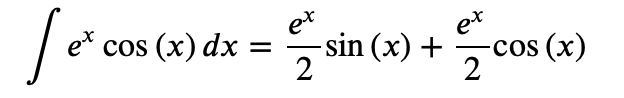
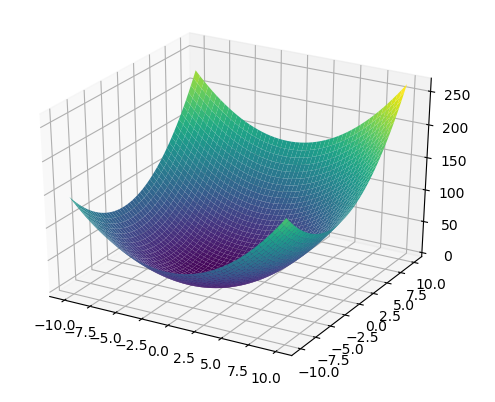
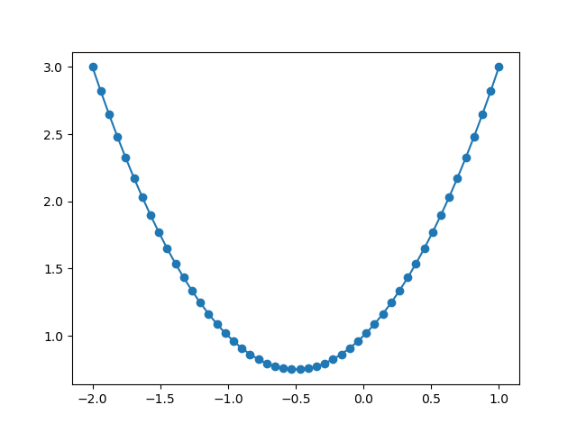
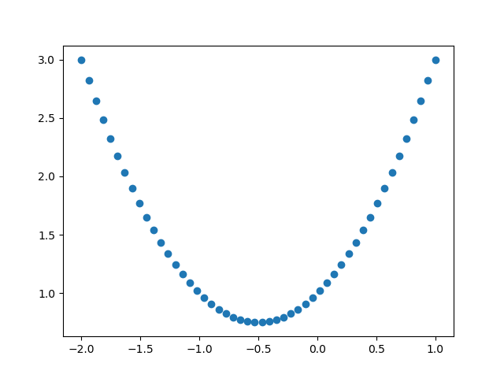
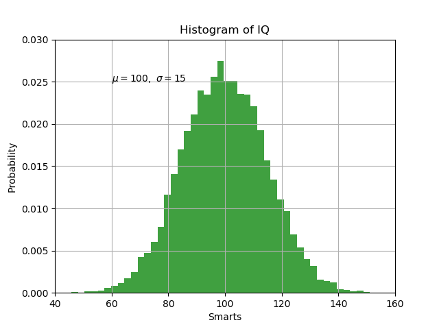
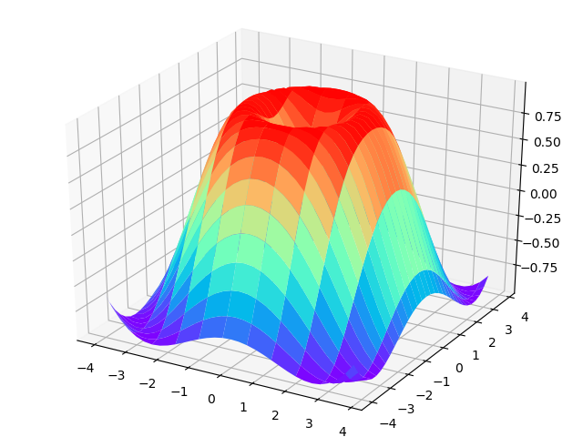
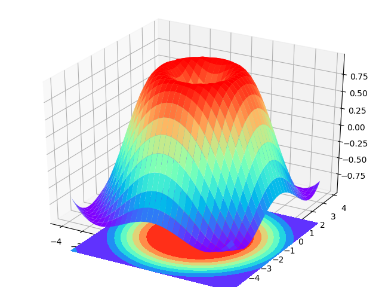
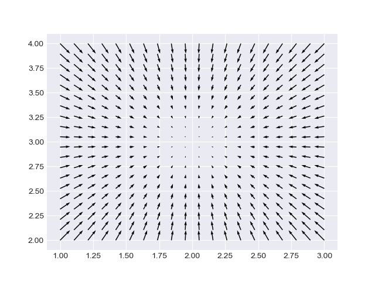
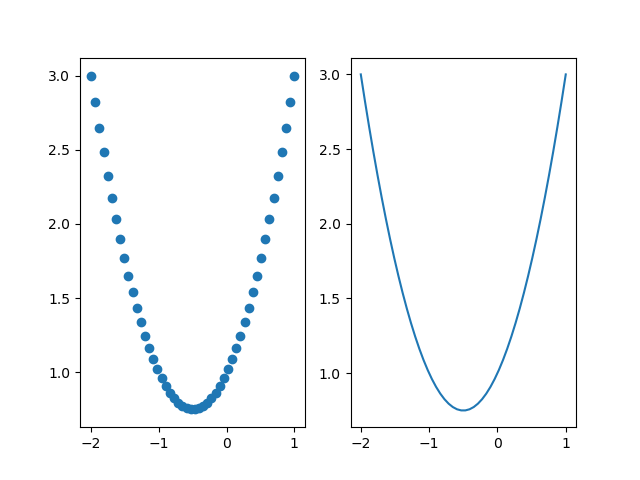

lib
Table of Contents
1 Numpy
numpy: Numerical Python
是高性能科学计算和数据分析的基础包。
部分功能如下：
- 向量，矩阵的计算
- 用整组数据进行快速运算的标准数学函数（无需写循环）
- 线性代数，随机数，傅立叶变换
1.1 import
import numpy as np
1.2 shape
shape是属性，所以是shape而不是shape()
shape的确定，从外到内，例如
[[1],[1]] # shape: (2,1) [ [ [1,1] ] [ [1,1] ] ] # shape (2,1,2)
1.3 数组转矩阵
>>> lst = [[1,2],[3,4]] lst = [[1,2],[3,4]] >>> arr1 = np.array(lst) arr1 = np.array(lst) >>> arr1 arr1 array([[1, 2], [3, 4]])
1.4 创建等间隔一维数组
np.arange(2,20,2) # arange: array range # array([ 2, 4, 6, 8, 10, 12, 14, 16, 18])
1.5 创建单位矩阵
>>> np.ones([2,3], dtype=int) array([[1, 1, 1], [1, 1, 1]])
1.6 创建零矩阵
>>> np.zeros([2,3]) array([[0., 0., 0.], [0., 0., 0.]])
1.7 矩阵切片
import numpy as np np.random.seed(1) # 使每次运行程序产生的随即样本相同 sample = np.random.randint(1, 10, [2, 2]) print(sample) # [[6 9] # [6 1]] print(sample[0, :]) # [6 9] print(sample[:, 0]) # [6 6] print(sample[1, 1]) # 1
1.8 矩阵运算
import numpy as np # add, subtract, multiply, divide, reciprocal, power, mod, dot np.random.seed(1) a = np.random.randint(1, 10, [2, 2]) b = np.random.randint(1, 10, [2, 2]) print(a) print(b) # [[6 9] # [6 1]] # [[1 2] # [8 7]] c = np.subtract(a, b) print(c) # [[ 5 7] # [-2 -6]] c = a - b print(c) # [[ 5 7] # [-2 -6]]
1.9 矩阵截取clip
a=np.arange(1,13).reshape((3,4)) print(a) print(np.clip(a,5,9))#最小5，最大9，小于5的都成了5，大于9的都成了9
1.10 转置
A=np.arange(1,10).reshape(3,3) print(A) print(np.transpose(A)) print(A.T)
1.11 统计函数
# mean, max, min, std, median, sum a = np.arange(5) print(a) print(np.mean(a)) print(np.max(a)) print(np.std(a)) # [0 1 2 3 4] # 2.0 # 4 # 1.4142135623730951
1.12 随机数和随机样本
一些源码：
# Some aliases: ranf = random = sample = random_sample __all__.extend(['ranf', 'random', 'sample'])
# 产生[0,1)之间的均匀分布的一个随即数 print(np.random.rand()) # 返回标准正太分布的一个随机数 print(np.random.randn()) # 随即整数 print(np.random.randint(1, 10))
# Results are from the "continuous uniform" distribution over the # stated interval. To sample :math:`Unif[a, b), b > a` multiply # the output of `random_sample` by `(b-a)` and add `a`:: # (b - a) * random_sample() + a print(np.random.random_sample([3, 3, 3])) # [[[0.80848879 0.07742857 0.18408582] # [0.71534262 0.92277854 0.02594712] # [0.94654033 0.78486133 0.0861656 ]] # # [[0.78783097 0.50163162 0.00963713] # [0.27947727 0.36261856 0.20622495] # [0.81018606 0.66324607 0.44896777]] # # [[0.02874924 0.50940814 0.41704826] # [0.67650676 0.94305175 0.51620809] # [0.7300231 0.59682459 0.63704211]]] print(np.random.randint(1, 10, [3, 3, 3])) # [[[3 4 6] # [8 7 6] # [9 4 1]] # # [[4 6 4] # [1 8 6] # [7 4 2]] # # [[6 8 7] # [5 8 7] # [8 4 5]]]
1.13 line space
主要用于图形绘制中的坐标轴
x = np.linspace(-2, 1, 10)
1.14 save and load
import numpy as np np.random.seed(1) a = np.random.randint(1, 10, [2, 2]) b = np.random.randint(1, 10, [2, 2]) np.save('a.npy', a) a_load = np.load('a.npy') print(a_load) np.savez('ab.npz', a, b) ab = np.load('ab.npz') print(ab['arr_0']) np.savez('ab.npz', a=a, b=b) ab = np.load('ab.npz') print(ab['a'])
1.15 判断两个矩阵是否相同
import numpy as np a = np.array([1, 1]) b = a c = np.array([1, 2]) print(a == b) print(a == c) print((a == b).all()) print((a == c).all())
1.16 vstack and hstack
>>> a=np.random.randint(0,10,(2,2,2)) >>> a array([[[8, 7], [3, 6]], [[5, 1], [9, 3]]]) >>> np.hstack(a) array([[8, 7, 5, 1], [3, 6, 9, 3]]) >>> np.vstack(a) array([[8, 7], [3, 6], [5, 1], [9, 3]])
2 Sympy
For symbolic computation.
2.1 import
import sympy as sym
2.2 derivative
>>> sym.init_printing() sym.init_printing() >>> x = sym.symbols('x') x = sym.symbols('x') >>> y = x**2 + 4*x + 3 y = x**2 + 4*x + 3 >>> y.diff(x) y.diff(x) 2⋅x + 4
2.3 integrate
x = sym.symbols('x') a = sym.Integral(sym.cos(x)*sym.exp(x), x) sym.Eq(a, a.doit())

2.4 plot
x, y = sym.symbols('x y') z = x**2+2*x+y**2+4*y+4 dzx = z.diff(x) dzy = z.diff(y) sym.plotting.plot3d(z, (x, -10, 10), (y, -10, 10))

3 matplotlib
For visualization.
3.1 import
import matplotlib.pyplot as plt
3.2 plot
import numpy as np import matplotlib.pyplot as plt x = np.linspace(-2, 1, 50) y = x**2 + x + 1 plt.plot(x, y, marker='o') plt.show()

3.3 scatter
import numpy as np import matplotlib.pyplot as plt x = np.linspace(-2, 1, 50) y = x ** 2 + x + 1 plt.scatter(x, y) plt.show()

3.4 hist
import numpy as np import matplotlib.pyplot as plt # Fixing random state for reproducibility np.random.seed(19680801) mu, sigma = 100, 15 x = mu + sigma * np.random.randn(10000) # the histogram of the data n, bins, patches = plt.hist(x, 50, density=True, facecolor='g', alpha=0.75) plt.xlabel('Smarts') plt.ylabel('Probability') plt.title('Histogram of IQ') plt.text(60, .025, r'$\mu=100,\ \sigma=15$') plt.axis([40, 160, 0, 0.03]) plt.grid(True) plt.show()

Compute and draw the histogram of x.
3.5 multiple figures
import numpy as np import matplotlib.pyplot as plt x = np.linspace(-2, 1, 50) y = x ** 2 + x + 1 plt.figure(1) plt.scatter(x, y) plt.figure(2) plt.plot(x, y) plt.show()
3.6 3d surface
import numpy as np import matplotlib.pyplot as plt from mpl_toolkits.mplot3d import Axes3D fig = plt.figure() ax = Axes3D(fig) # X, Y value X = np.arange(-4, 4, 0.25) Y = np.arange(-4, 4, 0.25) X, Y = np.meshgrid(X, Y) # x-y 平面的网格 R = np.sqrt(X ** 2 + Y ** 2) # height value Z = np.sin(R) # rstride: row stride # cstride: column stride ax.plot_surface(X, Y, Z, rstride=1, cstride=3, cmap=plt.get_cmap('rainbow')) plt.show()

3.7 contourf
import numpy as np import matplotlib.pyplot as plt from mpl_toolkits.mplot3d import Axes3D fig = plt.figure() ax = Axes3D(fig) # X, Y value X = np.arange(-4, 4, 0.25) Y = np.arange(-4, 4, 0.25) X, Y = np.meshgrid(X, Y) # x-y 平面的网格 R = np.sqrt(X ** 2 + Y ** 2) # height value Z = np.sin(R) # rstride: row stride # cstride: column stride ax.plot_surface(X, Y, Z, rstride=1, cstride=1, cmap=plt.get_cmap('rainbow')) # fig = plt.figure(2) # ax = Axes3D(fig) ax.contourf(X, Y, Z, zdir='z', offset=-1.5, cmap=plt.get_cmap('rainbow')) plt.show()
zdir='z' project on z;

3.8 quiver
import numpy as np import matplotlib.pyplot as plt import matplotlib as mpl mpl.style.use('seaborn-darkgrid') x1 = np.linspace(1, 3, 20) x2 = np.linspace(2, 4, 20) x1, x2 = np.meshgrid(x1, x2) u = 2 * x1 - 4 v = 2 * x2 - 6 plt.quiver(x1, x2, -u, -v) plt.show()

3.9 label, title
plt.xlabel() plt.title()
3.10 style
import matplotlib as mpl mpl.style.use('ggplot')
3.11 subplot
import numpy as np import matplotlib.pyplot as plt x = np.linspace(-2, 1, 50) y = x ** 2 + x + 1 plt.subplot(1, 2, 1) # one row, two columns; the first figure plt.scatter(x, y) plt.subplot(1, 2, 2) # one row, two columns; the second figure plt.plot(x, y) plt.show()

4 scikit-learn (sklearn)
4.1 LabelEncoder, LabelBinarizer, OneHotEncoder
from sklearn.preprocessing import LabelEncoder, LabelBinarizer, OneHotEncoder num = [1, 2, 3] s = ['a', 'b', 'c'] d2 = [[0, 0, 3], [1, 1, 0], [0, 2, 1], [1, 0, 2]] le = LabelEncoder() lb = LabelBinarizer() ohe = OneHotEncoder() print('label encoder...') print(le.fit_transform(num)) print(le.fit_transform(s)) print('label binarizer...') print(lb.fit_transform(num)) print(lb.fit_transform(s)) print('one hot encoder...') ohe.fit(d2) print(ohe.transform([[0, 1, 3]]).toarray()) print(ohe.transform([[1, 2, 3]]).toarray())
Print:
label encoder... [0 1 2] [0 1 2] label binarizer... [[1 0 0] [0 1 0] [0 0 1]] [[1 0 0] [0 1 0] [0 0 1]] one hot encoder... [[1. 0. 0. 1. 0. 0. 0. 0. 1.]] [[0. 1. 0. 0. 1. 0. 0. 0. 1.]]
For OneHotEncoder and d2, there is 2 values in the first feature (0,1), so the first feature occupies an array of length 2, [1,0] for 0, [0,1] or 1;
There are 3 values in the second feautre (0,1,2), so the second feature occupies an array of length 3, [1,0,0] for 0, [0,1,0] for 1, [0,0,1] for 2;
5 Pandas
- load data
- add index on matrix
- statistical computation(average, variance, maxisum, minimum)
5.1 Construction
def __init__(self, data=None, index=None, columns=None, dtype=None, copy=False):
For example:
import pandas as pd a = np.ones([3, 3]) df1 = pd.DataFrame(a) print(df1) df2 = pd.DataFrame(a, columns=list('abc')) print(df2) df3 = pd.DataFrame(a, index=list('ABC'), columns=list('abc')) print(df3)
The output is:
0 1 2
0 1.0 1.0 1.0
1 1.0 1.0 1.0
2 1.0 1.0 1.0
a b c
0 1.0 1.0 1.0
1 1.0 1.0 1.0
2 1.0 1.0 1.0
a b c
A 1.0 1.0 1.0
B 1.0 1.0 1.0
C 1.0 1.0 1.0
6 Tensorflow
6.1 basic
6.1.1 import
import tensorflow as tf
6.1.2 matrix
import tensorflow as tf import numpy as np a1 = tf.constant(np.ones([4, 4])) a2 = tf.constant(np.ones([4, 4])) print(a1) a1_dot_a2 = tf.matmul(a1, a2) sess = tf.Session() print(sess.run(a1_dot_a2))
output:
Tensor("Const:0", shape=(4, 4), dtype=float64)
[[4. 4. 4. 4.]
[4. 4. 4. 4.]
[4. 4. 4. 4.]
[4. 4. 4. 4.]]
6.1.3 variable
# define constant a1 = tf.constant(np.ones([4, 4]) * 2) # define vairable b1 = tf.Variable(a1) b2 = tf.Variable(np.ones([4, 4])) # define matrix mulplication b1_dot_b2 = tf.matmul(b1, b2) # variable initialization init = tf.global_variables_initializer() sess = tf.Session() sess.run(init) print(sess.run(b1)) print(sess.run(b2)) print(sess.run(b1_dot_b2))
output:
[[2. 2. 2. 2.] [2. 2. 2. 2.] [2. 2. 2. 2.] [2. 2. 2. 2.]] [[1. 1. 1. 1.] [1. 1. 1. 1.] [1. 1. 1. 1.] [1. 1. 1. 1.]] [[8. 8. 8. 8.] [8. 8. 8. 8.] [8. 8. 8. 8.] [8. 8. 8. 8.]]
6.1.4 placeholder
import tensorflow as tf import numpy as np b = tf.Variable(np.ones([4, 4])) # define placeholder c = tf.placeholder(dtype=tf.float64, shape=[4, 4]) c_dot_b = tf.matmul(c, b) init = tf.global_variables_initializer() sess = tf.Session() sess.run(init) print(sess.run(c_dot_b, feed_dict={c: np.ones([4, 4])}))
output:
[[4. 4. 4. 4.] [4. 4. 4. 4.] [4. 4. 4. 4.] [4. 4. 4. 4.]]
6.1.5 matrix functions
import tensorflow as tf A_r = [[1, 2], [-1, 1]] b_r = [1, 1] A = tf.placeholder(dtype=tf.float64, shape=[2, 2]) b = tf.placeholder(dtype=tf.float64, shape=[2]) # usage of matrix functions A_pow = tf.pow(A, 2) A_relu = tf.nn.relu(A) A_inverse = tf.matrix_inverse(A) A_T = tf.transpose(A) b_diag = tf.diag(b) I = tf.eye(6) A_concat = tf.concat([A, A], axis=0) init = tf.global_variables_initializer() sess = tf.Session() sess.run(init) lst = sess.run([A_pow, A_relu, A_inverse, A_T, b_diag, I, A_concat], feed_dict={A: A_r, b: b_r}) for _ in lst: print(_)
output:
[[1. 4.] [1. 1.]] [[1. 2.] [0. 1.]] [[ 0.33333333 -0.66666667] [ 0.33333333 0.33333333]] [[ 1. -1.] [ 2. 1.]] [[1. 0.] [0. 1.]] [[1. 0. 0. 0. 0. 0.] [0. 1. 0. 0. 0. 0.] [0. 0. 1. 0. 0. 0.] [0. 0. 0. 1. 0. 0.] [0. 0. 0. 0. 1. 0.] [0. 0. 0. 0. 0. 1.]] [[ 1. 2.] [-1. 1.] [ 1. 2.] [-1. 1.]]
6.1.6 scope
W = tf.Variable(tf.zeros([4, 4]), name="W") print(W.name) with tf.variable_scope("first-nn-layer"): W2 = tf.Variable(tf.zeros([4, 4]), name="W") print(W2.name) with tf.variable_scope("second-nn-layer") as scope: W3 = tf.get_variable("W", [4, 4]) scope.reuse_variables() W4 = tf.get_variable("W", [4, 4]) print(W4.name)
output:
W:0 first-nn-layer/W:0 second-nn-layer/W:0
如果将 W3 = tf.get_variable("W", [4, 4]) 注释掉，则 W4 = tf.get_variable("W", [4, 4]) 会报错。
reuse会使用之前使用get_variable方法创建的同名字的变量，而不会自动创建变量。不存在则报错。
6.2 simple demo
import tensorflow as tf from sklearn.datasets import load_iris # 1. load data iris = load_iris() data = iris.data # (150, 4) target = iris.target # (150,) # 2. placeholder to hold the data X = tf.placeholder(tf.float32, [None, 4]) # None 表示行不限 y = tf.placeholder(tf.float32, [None, 1]) # 3. layer # This layer implements the operation: # `outputs = activation(inputs * kernel + bias)` net = tf.layers.dense(X, 4, activation=tf.nn.relu) # 4. output fx = tf.layers.dense(net, 1) # 5. loss function loss = tf.reduce_mean(tf.square(fx - y)) # 6. train step train_step = tf.train.GradientDescentOptimizer(0.1).minimize(loss) # 7. init sess = tf.Session() init = tf.global_variables_initializer() sess.run(init) # 8. iteration for itr in range(10): sess.run(train_step, feed_dict={X: data, y: target.reshape(-1, 1)}) y_predict = sess.run(y, feed_dict={X: data[:3, :], y: target.reshape(-1, 1)[:3, :]}) print('iteration: {} with predict: \n{}'.format(itr, y_predict))
6.3 graph
graph = tf.Graph() with graph.as_default(): #neutual network writer = tf.summary.Filewriter('logdir',graph)
6.4 save
saver = tf.train.Saver() saver.save(sess,'model_path')
6.5 load
saver.restore(sess,'model_path')
6.6 optimizer
6.6.1 SGD
6.6.2 RMSprop
6.6.3 Adagrad
6.6.4 Adadelta
6.6.5 Adam
6.6.6 Adamax
6.6.7 Nadam
6.6.8 TFOptimizer
6.7 loss
7 OpenCV
7.1 读取图片
image = cv2.imread(path)
The function determines the type of an image by the content, not by the file extension.
In the case of color images, the decoded images will have the channels stored in BGR order.
The shape is (height, width, channels).
7.2 获取图片属性
7.2.1 获取row, column, channels
print(img.shape)
7.2.2 获取pixels总数目
print(img.size)
7.2.3 datatype
print(img.dtype)
7.3 ROI
ROI: region of image （图片的一块区域）
ROI is obtained using Numpy indexing.
import cv2 as cv img = cv.imread('../data/dog.jpg') print(img.shape) print(img[100, 100]) eye = img[56:76, 55:85] for i in range(0, 190, 30): img[i:i + 20, i:i + 30] = eye cv.imshow('hack', img) cv.waitKey(0)
7.4 获取某个channel
b = img[:, :, 0] img[:, :, 2] = 0
7.5 读取视频或摄像头
# videoCapture = cv2.VideoCapture(path) videoCapture = cv2.VideoCapture(0) # 读帧 success, frame = videoCapture.read() while success: .... cv2.imshow('bala', frame) cv2.waitKey(40) success, frame = videoCapture.read()
7.6 颜色转化
img2gray = cv2.cvtColor(img, cv2.COLOR_BGR2GRAY)
7.7 写文字
cv2.putText(...)
7.8 画框
cv2.rectangle(...)
8 Keras
Keras is a high-level neural networks API, written in Python and capable of running on top of TensorFlow, CNTK, or Theano. It was developed with a focus on enabling fast experimentation. Being able to go from idea to result with the least possible delay is key to doing good research.
8.1 Sequential
template:
- construct
model = Sequential()
model.add(...)
- compilation
model.compile(...)
- train
model.fit(data, label, ...)
- plot
history = model.fit(...) plt.plot(history.history['acc']) # matplotlib.pyplot
- evalueate
model.evaluate(...)
- save (can also be saved by specifying aguments in model.fit(…))
mode.save(...) # save model and weights model.save_weights(...) # save weight only
- predict
model.predict(...)
8.2 Functional API
https://keras.io/getting-started/functional-api-guide/
- A layer instance is callable (on a tensor), and it returns a tensor
- Input tensor(s) and output tensor(s) can then be used to define a Model
- Such a model can be trained just like Keras Sequential models.